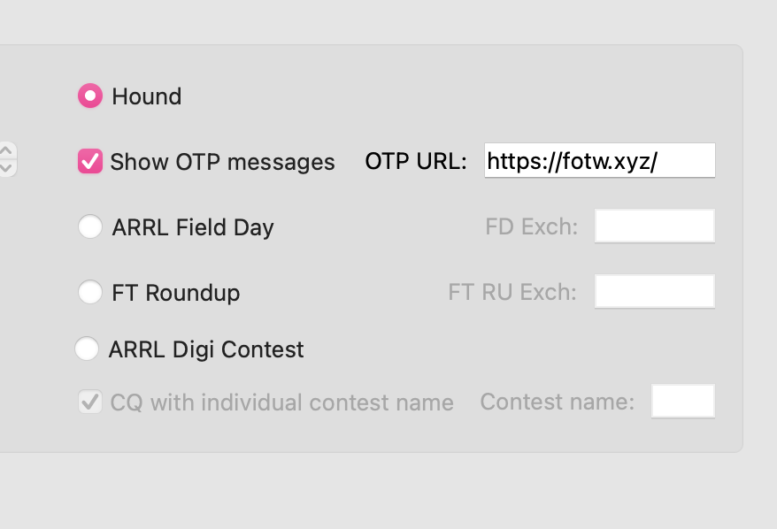
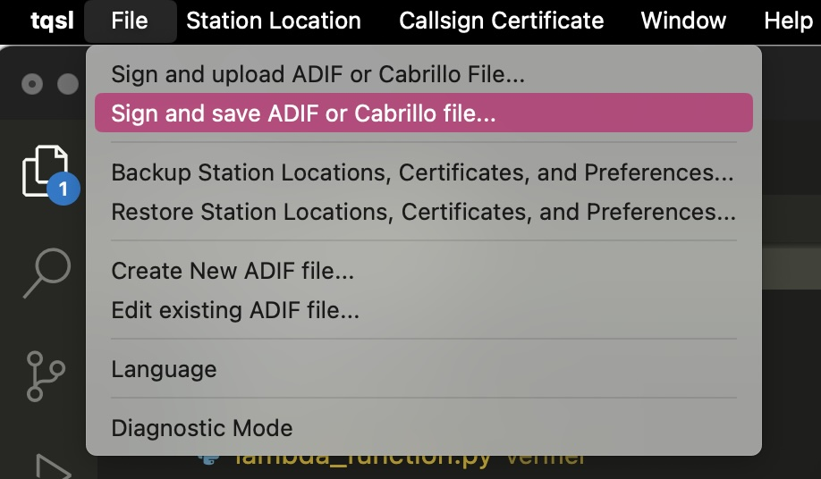
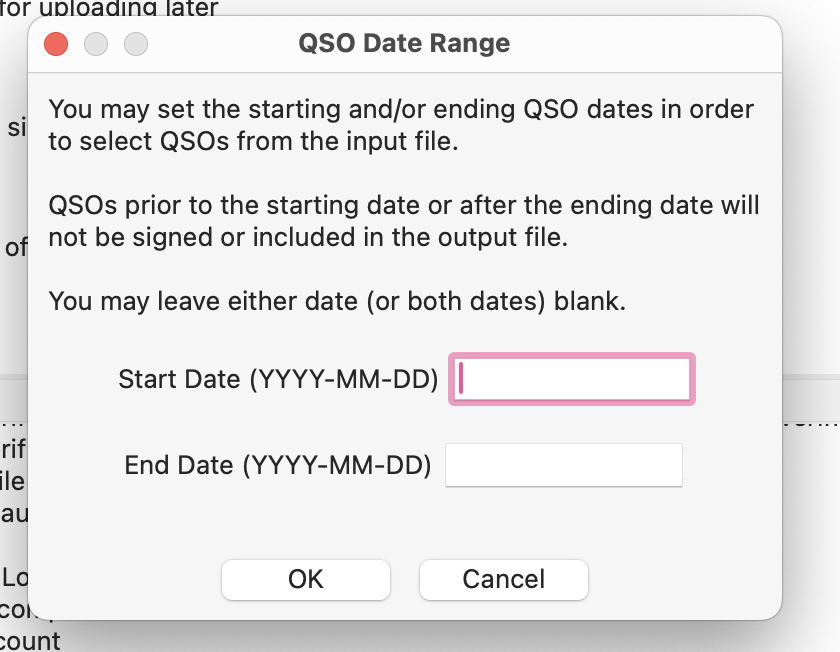
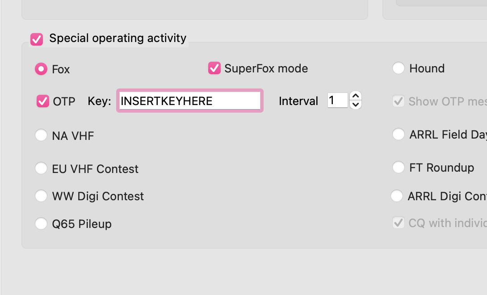

WSJT-X verification system using LoTW certificates for verification
Set your OTP server to in WSJT-X to: https://fotw.xyz/
FoTW will also check 9dx.cc (the default WSJT-X server) as well, so you won't need to change this URL for other dxpeditions.
To provision a FoTW OTP key to use in WSJT-X you need to sign a verification log file generated by us then upload it for verification by our servers. A correctly signed verification log will provide a FoTW OTP key instantly which can then be used in WSJT-X. No manual approval is required.
Requirements:
Open TQSL. In the menu click "Sign and save ADIF" (do not select upload; you should not upload this log to the ARRL. Only upload this file to fotw.xyz).
Open the ADIF file you just downloaded, select a place to save the resulting tq8 file.
Select the certificate you'd like to use for WSJT-X verification.
Verify the details. Leave date range blank.

Open WSJT-X settings. Under advanced select "Special operating activities", tick OTP and enter your key from the following details.
Example:
LoTW uses x509 certificates to sign QSOs. Each QSO is signed using a callsign certificate. To obtain a callsign certificate an operator is required to go through a verification process outlined by the ARRL. FoTW uses the TQSL software to validate that an operator has been verified through this system.
FoTW verification process:
The ToTP server is hosted on AWS using CloudFront, API Gateway and Lambda. Effectively the Lambda function is
waiting for requests to https://fotw.xyz/check/{callsign}/{timestamp}/{code}
ToTP process:
VERIFIED (with no additional bytes on the end such as a new line) UNVERIFIED